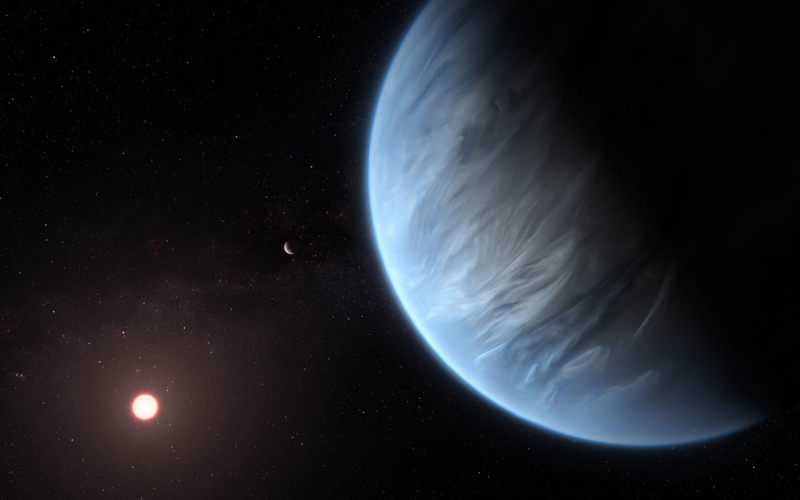

Jayshil A Patel
Research
Characterising Exoplanets and their host stars using TESS and CHEOPS
न हि ज्ञानेन सद्रशंं पवित्रमिह विद्यते
- Shrimad Bhagavadgita, Chapter 4, Verse 38
(Na hi jñānena sadrasam pavitram iha vidyate — There is nothing more sublime and pure as knowledge)
I am interested in various aspects of exoplanetary science, ranging from exoplanet characterisation to studying their atmospheres. To achieve this goal, I analyse the observational data from state-of-the-art space-based observatories such as the James Webb Space Telescope (JWST), the Transiting Exoplanet Survey Satellite (TESS) and the CHaracterizing ExOPlanet Satellite (CHEOPS), and ground-based telescopes such as the Very Large Telescope (VLT).
The most crucial question that pondering humanity since the dawn of astronomy is about the possibility of life elsewhere in the universe. As we know it, life can only evolve and sustain on planets around stars, which we dubbed exoplanets. In order to understand the existence of life on these exoplanets, first, we must characterize them and their host stars and study their bulk as well as specific properties. Even without thinking about perspectives of life, planets themselves are curious objects to study, for the sake of understanding their diverse compositions, atmospheres and formation scenarios. Studying exoplanets and their atmospheres has been the prime goal of my research.
Research Themes
Ultra-Short Period Rocky Planets
 Artist's impression of 55 Cancri e
Artist's impression of 55 Cancri e
Credit: ESA/Hubble, M. Kornmesser
Detecting an atmosphere on a rocky planet is one of the main drivers of exoplanet science today. The easiest candidates for this search are the hot rocky planets with temperatures of several thousand kelvins owing to their proximity to the host star. They have a high planet-to-star flux ratio because of a higher temperature, making them easier to observe. Some of these planets show evidence of a heavy metal-rich secondary atmosphere, possibly made up of rock vapour. I am involved in the research of several hot rocky planets to study their atmosphere using space-based telescopes. My other interest is in searching for atmospheres on temperate rocky planets with JWST. While these observations will improve our understanding of the atmospheric properties of rocky planets, they will not inform us about their interior. I am leading an observing program on the VLT to observe disintegrating planets, which will give us a direct look into the interior of rocky planets.
Diversity of sub-Neptunes
Artist's impression of a sub-Neptune K2-18 b
Credit: ESA/Hubble, M. Kornmesser
Exoplanets with sizes larger than Earth but smaller than Neptune are among the most common planets in our galaxy. Larger planets among them, with radii >~ 2 Earth radii, should have a significant atmosphere, deducing from their low density. However, there is a degeneracy in the internal structure of these so-called sub-Neptune planets, meaning that the observed mass and radius can be explained by several internal compositions. These compositions include a rocky planet with a thick primordial atmosphere, scaled down version of a gas giant (gas “dwarf”), or a water world (hycean planet). All of these compositions could be true for different planets. I use observations to investigate the physical properties of sub-Neptunes.
Hot Jupiters and their Atmospheres
 Artist's impression of a hot Jupiter in M67
Artist's impression of a hot Jupiter in M67
Credit: ESO/L. Calçada
The gas giant planets orbiting in the proximity of their host stars are the best candidates for detailed photometric and spectroscopic observations. Their reflective properties, e.g., geometric albedo, can be investigated by observing them in broadband optical photometry: I am a part of the CHEOPS GTO team that studies such reflective properties of hot Jupiters using precise photometry from CHEOPS. With precision observations from CHEOPS and JWST, we can now start to examine the three-dimensional atmospheric structure of gas giants. For example, I am interested in how the reflective properties of a planet, caused by clouds, vary with longitude and latitude. I am leading and co-leading several observing programs with CHEOPS to directly detect and characterise the 3D atmospheric structure of hot Jupiters.
Known Exoplanets with TESS
 Artist's impression of TESS
Artist's impression of TESS
(Credits to their respective creators)
The Transiting Exoplanet Survey Satellite, or TESS, is an MIT-led NASA mission to find new exoplanets around bright nearby stars. Being a survey mission it has observed roughly the whole sky, with some regions observed multiple times. In this process, it has observed, continuously for at least 28 days, many stars which are known to have exoplanets around them. This photometric data can be used to update the bulk properties of the planet, such as radius, ephemeris etc. In particular, I am interested in employing this data to learn about the atmospheric properties of the planet such as geometric albedo. For my Master's thesis, I used transit lightcurves of known planets observed with TESS to study the limb-darkening effect of exoplanet host stars (accompanying blog post).
Software Development
Data Analysis is an integral part of a modern astronomer. Living in a data-intensive era, it is really important to produce a careful and speedy analysis of the data. I am involved in the development of some such tools to analyse the data. I am co-leading a package, called Spectral exTraction And Reduction Kit (or, stark), with Alexis Brandeker, to robustly extract spectra from timeseries data, especially from JWST. Additionally, I am a contributing developer of juliet, which is a versatile tool to analyse transit and radial velocity data.